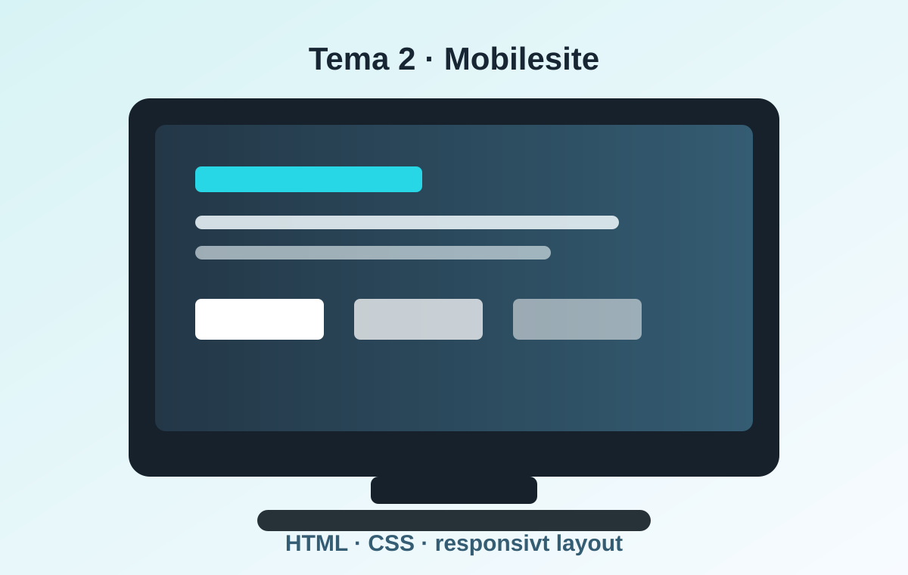

Billeder og layout
Galleri
Galleriet viste forskellige computerbilleder og gav mig øvelse i billedplacering, responsiv grid-struktur og visuel variation.

Billeder og layout
Galleriet viste forskellige computerbilleder og gav mig øvelse i billedplacering, responsiv grid-struktur og visuel variation.
